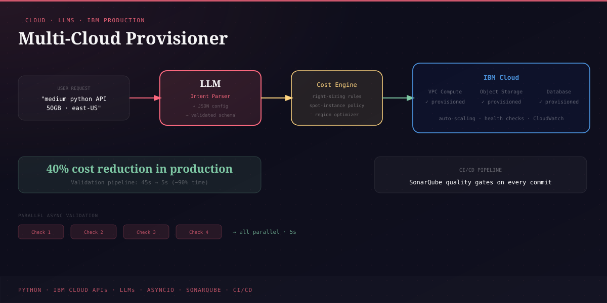

The Problem
Cloud infrastructure management at scale involves constant trade-offs between cost, availability, and resource utilisation. Manual provisioning is slow, error-prone, and expensive - particularly in multi-cloud environments where teams lack visibility across AWS, Azure, and IBM Cloud simultaneously. The challenge was automating resource decisions using AI.
Objective
Build an MVP that uses large language models (LLMs) to intelligently automate cloud resource provisioning across IBM Cloud - reducing costs, improving resource utilisation, and cutting the manual overhead of infrastructure management.
Key Contributions
LLM-Driven Decision Engine
Integrated LLMs to interpret natural language infrastructure requests and map them to optimal cloud resource configurations - replacing manual provisioning decisions.
IBM Cloud Integration
Connected to IBM Cloud APIs for automated provisioning, scaling, and deprovisioning of compute and storage resources based on LLM recommendations.
Cost Optimisation
Implemented resource right-sizing logic that reduced unnecessary over-provisioning, cutting cloud resource costs by 40% compared to baseline.
API Integration
Managed multiple API call chains, integrated monitoring tools into the core codebase, and implemented 3+ new provisioner features during development at IBM.
CI/CD Integration
Incorporated automated code quality checks (SonarQube) into the CI/CD pipeline, ensuring code consistency and supporting security review practices.
Efficiency Improvements
Overhauled the validation framework as part of broader infrastructure improvements, cutting validation time by ~90% across provisioning workflows.
Technologies Used
| Category | Tools & Details |
|---|---|
| Language | Python - core orchestration, API integration, and provisioning logic |
| Cloud Platform | IBM Cloud - target infrastructure for automated provisioning |
| AI / LLMs | Large Language Models - natural language to infrastructure mapping |
| APIs | IBM Cloud REST APIs - compute, storage, and networking provisioning |
| Code Quality | SonarQube - automated code quality gates in CI/CD |
| Deployment | CI/CD pipeline - automated build, test, and deploy workflows |
Impact
- Reduced cloud infrastructure costs by 40% through LLM-driven right-sizing
- Eliminated manual provisioning overhead with natural language automation
- Integrated code quality automation improving codebase consistency
- Validated the viability of LLM-assisted infrastructure management at enterprise scale
Conclusion
The Multi-Cloud Provisioner demonstrated that LLMs can meaningfully reduce the complexity and cost of cloud infrastructure management. By translating natural language requirements into optimised provisioning decisions, the system cut costs by 40% while reducing manual work - validating AI-assisted infrastructure as a practical enterprise approach.